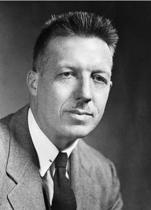

02
Human Resources Theory

Douglas Murray McGregor
SEPTEMBER 1906 - OCTOBER 01, 1964
Douglas McGregor, a management professor at the Massachusetts Institute of Technology in the 1950s and 1960s, felt that there are 2 different perspectives, which he termed as Theory X and Theory Y. In this section we’re only tackling Theory Y similar to the human relations approach; managers believe that people want to succeed, and they can excel if you give them the right to be creative. In addition, people want to work, seek direction, and are ambitious.
Douglas McGregor was chosen as the core management theorist for VOLB because his Theory Y framework directly aligns with the student collective’s collaborative, self-directed culture.
Theory Y was selected for the various following reasons:
Organizational Communication explores how information, culture, and relationships are structured within an organization to achieve shared goals. It is vital because clear communication aligns diverse teams, prevents friction, and directly shapes organizational performance and morale. By examining frameworks like McGregor’s Theory Y, I realized that modern workplaces thrive on mutual trust and lateral collaboration rather than rigid top-down command chains. I learned how to analyze team dynamics, design adaptive matrix structures, and bridge distinct domain perspectives such as technical logic and visual storytelling. Ultimately, OrgComm taught me that an organizationa’s structural design is itself a powerful form of communication.